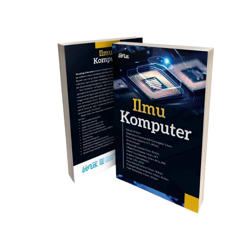
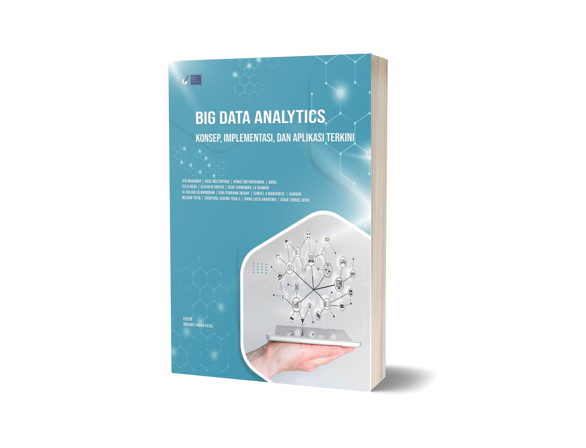

Perpustakaan Universitas Al-Ghifari
Beranda
Katalog Online
E-Resources
Layanan
Tentang Kami
Kontak
Temukan Pengetahuan Tak Terbatas di Sini
Jelajahi koleksi buku, jurnal, dan karya ilmiah terbaru.
Cari
Koleksi Unggulan
Pengantar Algoritma
Penulis: Wisnu Aji
Lihat Detail

Jurnal Ilmu Komputer
Edisi Terbaru
Lihat Detail

Analisis Big Data
Penulis: Wisnu Aji
Lihat Detail
Akses Cepat
Cara Peminjaman
Jam Operasional
Berita Perpustakaan
FAQ